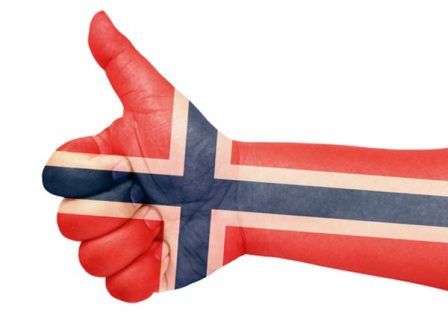
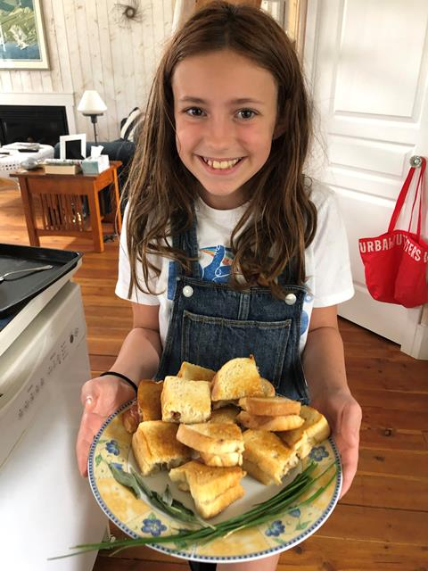
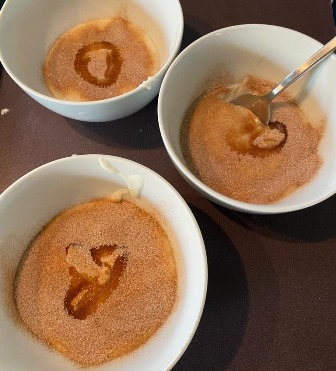
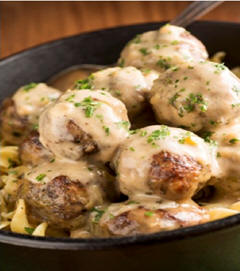
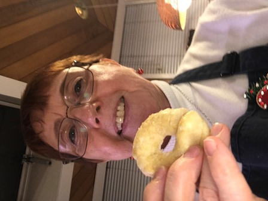
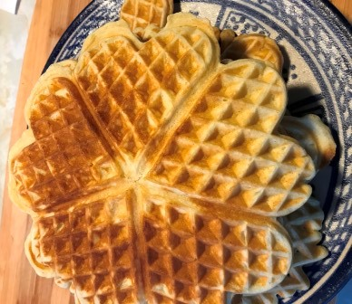
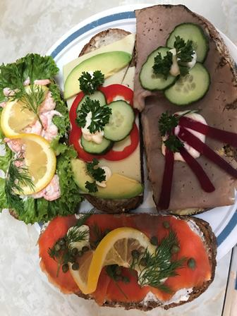
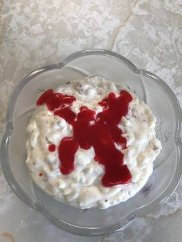
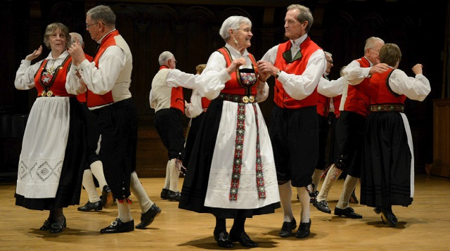

The Sports Medal Program
For Children and Adults of All Ages
If you complete the requirements below, you can win 4 possible medals!
The links to participate are below:

A special note from Susan Strang - Cultural Director for District #7
This page began as a way to get some of my lodge members in Varden Lodge, who don't attend meetings to stay more involved with the lodge. Because we missed Heritage Camp and the Border Festival, these people were missing their usual summertime events, and COVID was a great incentive to start something new online. I decided to try this as an experiment to see what kind of "buy in" I would get. It was so successful that I thought I would arrange to post it to our website for others to access.
We are going to have five sessions (one per month) to complete level one of the Norwegian Cooking Culture pin. I have 4 people who could not attend the session but are going to be part of the group and plan to make the first recipe on their own. It's easy, so they can certainly do that. My vision is to see us develop classes in cooking and other culture skills for people to access through the website. I know of instructors who I am sure would be willing to do a 30 minute session if we had lessons available online.
We have created a YouTube channel to post the videos on. You can find the link for the first cooking video
HERE. This is my first attempt at recording a zoom conference, and it's not perfect, but the pace is fine for people to bake along with me. The recipes will also be provided as downloadable .PDF files.
The Ultimate Grilled Cheese Sandwich

A fully loaded grilled cheese sandwich, sure to satisfy.
Video Link
Recipe
Apple Raisin Squares

Sweet and fruity, with just the right crunch!
Video Link
Recipe
Rømmegrøt

A delicious and historic Norwegian porridge.
Video Link
Norwegian Meatballs

The true classic, with all the savoury goodness you can nearly taste already!
Video Link
Recipe
Berliner Kranser

A sweet treat of a cookie, shaped like a wreath
Video Link
Recipe
Norwegian Vafler

Oh you already know what you're here for.
Video Link
Recipe
Open Faced Sandwiches

Half the bread means twice the flavour! Consume with caution.
Video Link
Recipe
Riskrem

A delicious and creamy Norwegian desert, steeped in tradition!
Video Link
Recipe
Recognition Program
The Foundation tracks donations from individuals as well as from District 4 and District 7 Lodges.
Recognition is provided for accumulated individual gifts and once a member reaches a level, the Foundation provides a recognition pin as follows:
| Gifts totalling $100 |
Bronze Pin |
| Gifts totalling $500 |
Silver Pin |
| Gifts totalling $1000 |
Gold Pin |
| Gifts totalling $2000 |
Platinum Pin |
| Gifts totalling $5000 |
Platinum Plus Pin |
Each year, the Foundation tracks all the gifts received from the Canadian Lodges in District 4 and
District 7. The total gifts received from a Lodge in that year are then divided by the number of adult members in that Lodge to determine a dollar value per member. The Lodge with the highest dollar value
per member receives the “Founder’s Award”. These are generally presented at the Foundation’s Annual General Meeting.
Forward Donations and Donor Forms to:
Erik Brochmann, Treasurer
SONS OF NORWAY FOUNDATION IN CANADA
32412 Ptarmigan Drive
Mission, BC V2V 5R5
Please make cheques payable to: Sons of Norway Foundation in Canada
